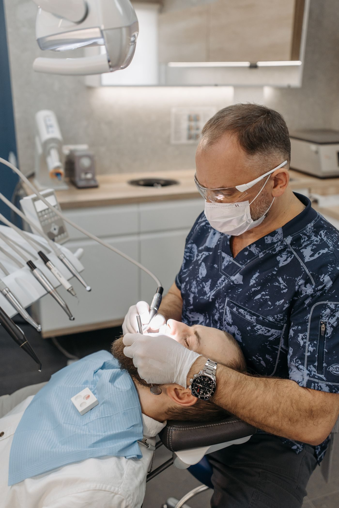
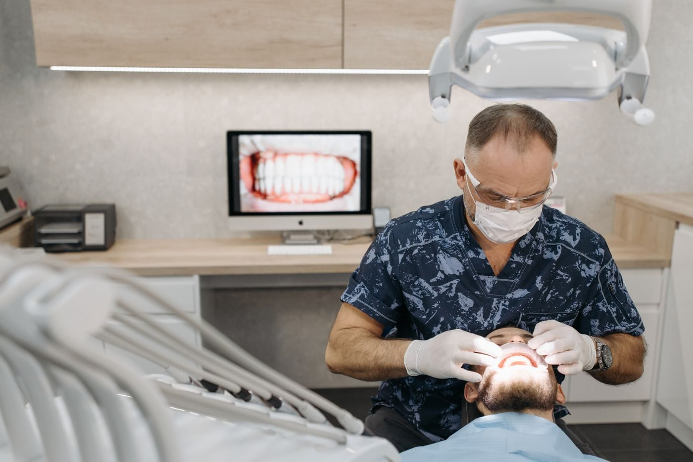

Ocean Springs, Mississippi
Ocean Springs Dental is a general dentistry practice offering full smile reconstruction, veneers, crowns, bridges, implants, root canals, periodontal therapy, white fillings, dentures, and partials. New patients are welcome, and emergencies are seen during office hours.
Ocean Springs Dental is a general dentistry practice in Ocean Springs. Services include full smile reconstruction, veneers, crowns, bridges, implants, root canals, periodontal therapy, white fillings, dentures, and partials. New patients are welcome, and emergencies are seen during office hours. Call to ask about an appointment.


2113 Government St, Ocean Springs, MS
Monday to Thursday 8:00 AM to 4:00 PM